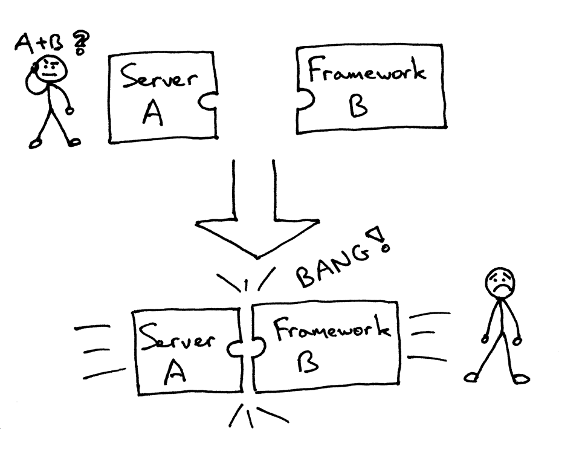

Python en producción
Desplegando aplicaciones
Notes

Agenda
- Arquitecturas web escalables
- Opciones despliegue en produción
- Python Web Server Gateway Interface (WSGI)
- Desplegando python
- gunicorn
- uwsgi
- chaussette + circus
- Práctica
- uwsgi
- circus + chaussette
- nginx
Notes
Arquitecturas web · conceptos previos
-
Concurrencia
- Propiedad de un sistema, que representa el hecho de que múltiples actividades se ejecutan simultáneamente.
- Programación concurrente: Es la composición de módulos que se ejecutan independientemente, de forma asíncrona y no determinista.
- Hace referencia a propiedad conceptual de un programa, ya sea single-core, multi-core o distribuido.
-
Paralelismo
- Es una propiedad de tiempo de ejecución (no conceptual)
- Hace falta más de un procesador, o bién sistema distribuido
- Es una forma de ejecutar programas concurrentes
Notes
Arquitecturas web · conceptos previos
-
Escalabilidad
- Propiedad de un sistema, que describe la habilidad de gestionar subidas y bajadas de carga de trabajo apropiadamente
- Vertical: Más recursos a un sólo nodo: CPU, Memoria, Disco...
- Horizontal: Más nodos en el sistema
-
Escalabilidad y concurrencia
- Íntimamente relacionados
- La concurrencia puede hacer a una aplicación escalable
- Mediante concurrencia y paralelismo, podemos exprimir las caracteríasticas del hardware (Ej: extender ejecución a múltiples cores)
Notes
Introducimos modelos de concurrencia, para exponer problemática y acabar viendo porqué usamos procesos simples, sincronos, bloqueantes.
Aplicación web

Notes
Rendimiento web
En términos de peticiones y respuestas web, métricas interesantes:
- Throughput (#peticiones/seg)
- Tiempo de respuesta (ms)
- Transferencia (Mbps)
- Número de peticiones concurrentes
Y las estadísticas a mirar en el servidor:
- Uso de CPU
- Carga
- Memoria usada
- Número de procesos, threads, sockets, descriptores de fichero...
Notes
Arquitectura web escalable: El objetivo
- Resumiendo el problema:
- Queremos gestionar tantas peticiones en paralelo como sea posible
- Tan rápido como sea posible
- Con los mínimos recursos necesarios!!
Otra forma de verlo: el uso de recursos aumenta y escala con la carga.
- Dos extremos de ejemplo:
- Somos pobres y queremos que funcione con la mínima instancia de heroku.
- Queremos escalar miles de peticiones en Amazon, y pero pagar el mínimo necesario.
- En el centro, tenemos un servidor dedicado sobrado: no es crucial para nosotros consumir el mínimo posible.
Notes
Arquitectura web escalable: El problema
- Queremos servir concurrentemente las peticiones. Necesitamos mapear conexiones y y peticiones a algún modelo de programación concurrente.
- Queremos escalar horizontalmente
- Queremos usar el mínimo de recursos
- Sabemos que las peticiones concurrentes provocarán una mezcla de I/O y CPU
- En apps donde se deben hacer peticiones síncronas para el cliente, como una dispo hotelera, el porcentaje de I/O se puede disparar.
Notes
Formas de gestionar I/O
Modos de I/O a bajo nivel en Linux:
- Para arquitectura web, nos interesa diferenciar entre síncrono/bloqueante, y el resto.
- Nos referimos a los otros tres modelos como como event driven
- Ejemplos componentes asíncronos orientados a eventos
- Web servers: nginx
- Librerías python: twisted, asyncio, aiohttp, gevent, tornado, crossbar.io
- frameworks python: API-Hour, klein
- Ejemplos componentes asíncronos orientados a eventos
Notes
Arquitecturas web Prefork

El proceso principal abre socket, crea procesos hijos y comparte socket con ellos. Cada request handler bloquea esperando conexion.
Notes
Diseño de arquitecturas escalables: componentes
Notes
Componentes de nuestra Aplicación Python
- Un servidor web con arquitectura event-driven, gestiona conexiones con los
clientes web. Alto rendimiento en I/O de red y ficheros estáticos.
- nginx, cherokee, lighttpd
- Servidor de aplicaciones python en modo prefork
- Gestionamos I/O de nuestra aplicación mediante peticiones concurrentes
- Programación síncrona, bloqueante, deterministica.
- Alternativa: programación concurrente en nuestra app: gevent, asyncio, tiwsted...
Notes
Servidor aplicaciones Python
-
Num workers?
- (2 x $num_cores) + 1
- Dependerá de nuestro porcentaje de I/O !
-
Decisiones:
- Procesos o threads?
- Si gestionamos alto porcentaje I/O mediante procesos bloqueantes, tendremos que escalar en num procesos. La memoria será un factor importante.
- Podemos usar threads para obtener más hilos concurrentes con la misma memoria.
- Django en general es thread safe
- Cuidado con los custom template tags
- Problemas históricos con class based views, parece que arreglados.
- Django en general es thread safe
Notes
Referentes diseño arquitecturas aplicaciones:
- http://12factor.net
- shared nothing
- Inmutable Infrastructure
Notes
Servidores de aplicaciones python

http://ruslanspivak.com/lsbaws-part2/
Notes
Ejemplo: Apache + mod_python + Django
# from the past!
<Location "/mysite/">
SetHandler python-program
PythonHandler django.core.handlers.modpython
SetEnv DJANGO_SETTINGS_MODULE mysite.settings
PythonOption django.root /mysite
PythonDebug On
</Location>
Notes
Servidores de aplicaciones python

Notes
Python Web Server Gateway Interface

https://www.python.org/dev/peps/pep-0333/
Notes
Web Server Gateway Interface

Notes
WSGI

Notes
Ejemplo WSGI: simple callable
# simple.py
def app(environ, start_response):
status = '200 OK' # HTTP Status
headers = [('Content-type', 'text/plain')] # HTTP Headers
start_response(status, headers)
return ["Hello from ", "simple app", ]
Notes
Ejemplo WSGI: aplicación Flask
# flaskapp.py
from flask import Flask
from flask import Response
flask_app = Flask('flaskapp')
@flask_app.route('/hello')
def hello_world():
return Response(
'Hello world from Flask!\n',
mimetype='text/plain'
)
app = flask_app.wsgi_app
Notes
Ejemplo WSGI: aplicación django
# djangoapp/views.py
from django.http import HttpResponse
def index(request):
return HttpResponse(
'Hello world from Django!\n',
content_type='text/plain'
)
# djangoapp/urls.py
from django.conf.urls import patterns, include, url
from django.contrib import admin
urlpatterns = patterns('',
url(r'^hello/', 'djangoapp.views.index'),
url(r'^admin/', include(admin.site.urls)),
)
# djangoapp/wsgi.py
import os
os.environ.setdefault("DJANGO_SETTINGS_MODULE", "settings")
from django.core.wsgi import get_wsgi_application
application = get_wsgi_application()
Notes
Servidor de aplicaciones python en producción
-
Tareas a gestionar:
- Abrir socket y compartirlo
- Crear procesos prefork (+ threads)
- Supervisar procesos
- Escalar procesos ?
- Inicializar Virtualenv
- ¿Dónde guardamos la configuración?
-
Nuestro app server tendrá varios componentes que se repartirán la responsabilidad de cada tarea.
Notes
gunicorn
- http://gunicorn.org/
- python WSGI server
- Modelo servidor:
- Síncrono: prefork
- Asíncrono
- greenlets
- tornado
- asyncio
- pip install gunicorn
gunicorn -w 2 flaskapp:app gunicorn -w 2 djangoapp.wsgi:application
Notes
chaussette
- http://chaussette.readthedocs.org/
- python WSGI server
- Múltiples backends:
- gevent – based on Gevent’s pywsgi server
- fastgevent – based on Gevent’s wsgi server – faster but does not support streaming.
- meinheld – based on Meinheld’s fast C server
- waitress – based on Pyramid’s waitress pure Python web server (py3)
- eventlet – based on Eventlet’s wsgi server
- geventwebsocket – Gevent’s pywsgi server coupled with geventwebsocket handler.
- geventws4py – Gevent’s pywsgi server coupled with ws4py handler.
- socketio – based on gevent-socketio, which is a custom Gevent server & handler that manages the socketio protocol.
- bjoern – based on Bjoern.
- tornado – based on Tornado’s wsgi server.
- Pensado para no gestionar el socket
Notes
uwsgi
- Servidor WSGI implementado en C
- Alto rendimiento
- modo prefork, soporta combinación de procesos y threads
- Reinicio graceful
- Protocolo uwsgi comunicación con web server (también server propio)
.
uwsgi --http :8000 --module flaskapp:app \
--master --processes 4 --threads 2
Notes
Servidor de aplicaciones python en producción
- Tareas a gestionar:
- Abrir socket:
- uwsgi, gunicorn, circusd
- Prefork procesos:
- uwsgi, gunicorn, circusd
- Supervisar procesos:
- supervisord, circusd, upstart, systemd, uwsgi
- Activar Virtualenv:
- circusd, uwsgi, bash
- Servidor wsgi:
- chaussette, uwsgi, gunicorn
- Servir estáticos
- nginx, uwsgi, gunicorn
- Abrir socket:
Notes
Servidor de aplicaciones python: combinaciones
- supervisord + uwsgi
- supervisord + gunicorn
- circusd + chaussette
- circusd + uwsgi
Notes
Servidor de aplicaciones python: supervisor
¿Por qué no usamos sysvinit, upstart, systemd?
- Monitorización del proceso: fork() vs "vigilar" el PID
- No queremos ni oir hablar de start-stop-daemon :P
- Gestión redirección de stdout y stderr (logs)
- Parámetros app-friendly (chdir, virtualenv.. )
- formato .ini
- En el caso de circusd, muchas tareas extra (sockets, virtualenv, escalado, stats...)
Notes
Gestionar el virtualenv para desplegar
Usuario dedicado
groupadd -g 500 creantbits
useradd -g 500 -d /creantbits -m -s /bin/bash creantbits
pip install virtualenvwrapper
export WORKON_HOME=$HOME/.virtualenvs
source /usr/local/bin/virtualenvwrapper.sh
mkvirtualenv django
workon django
pip install pew
export WORKON_HOME=$HOME/.virtualenvs
PS1="\[\033[01;34m\]\$(basename '$VIRTUAL_ENV')\e[0m$PS1"
pew-new django
pew-workon django
pew-in django python manage.py runserver
Notes
circus
http://circus.readthedocs.org/en/latest/
pip install circus
pip install circus-web
Notes
circusd appserver
[circus]
httpd = True
statsd = True
httpd_host = 0.0.0.0
httpd_port = 8080
[watcher:creantbits]
working_dir = /creantbits/djangoapp
cmd = /usr/local/bin/chaussette --fd $(circus.sockets.creantbits) djangoapp.wsgi.application
#working_dir = /creantbits
#cmd = /usr/local/bin/chaussette --fd $(circus.sockets.creantbits) flaskapp.app
numprocesses = 60
use_sockets = True
uid = django
gid = django
virtualenv = /var/pywww/creantbits/.virtualenvs/creantbits
copy_env = True
[socket:creantbits]
host = 0.0.0.0
port = 8000
Notes
uwsgi.ini
[uwsgi]
socket = /tmp/creantbits.sock
http = :8000
chmod-socket = 666
master = true
processes = 4
threads = 5
harakiri = 60
max-requests = 2000
chdir = /creantbits/djangoapp
pythonpath = /creantbits/djangoapp
virtualenv = /creantbits/.virtualenvs/creantbits
#env = DJANGO_SETTINGS_MODULE=djangoapp.settings
#module = django.core.handlers.wsgi:WSGIHandler()
module = djangoapp.wsgi
uid = creantbits
gid = creantbits
vacuum = true
touch-reload = /tmp/creantbits.reload
#static-map = /static=/tmp/static
#static-map = /media=/tmp/media
disable-logging = 0
memory-report = 1
log-master = 1
log-date = 1
log-slow = 1
log-4xx = 1
log-sendfile = 1
log-micros = 0
log-slow = 1
Notes
supervisor
[program:trespamsz]
command = /usr/local/bin/uwsgi --ini /etc/uwsgi-prod.d/trespamsz.ini
directory = /tmp
user=trespamsz
process_name=trespamsz
numprocs=1
autostart=true
redirect_stderr=true
stdout_logfile=/var/log/apps-prod/trespamsz-uwsgi.log
priority=10
umask=002
stopsignal=QUIT
Notes
nginx
# uwsgi
location / {
include uwsgi_params;
uwsgi_pass 127.0.0.1:3031;
}
# proxy
location / {
include proxy_params;
proxy_pass http://localhost:8000;
}
Notes
ejemplo nginx
server {
listen 80;
server_name trespams.com;
access_log /var/log/nginx/trespamsz-access.log;
error_log /var/log/nginx/trespamsz-error.log;
location / {
uwsgi_pass unix:/var/pywww/trespamsz/nginx.sock;
include uwsgi_params;
}
location /media/trespamsz {
root /var/www;
expires max;
access_log off;
}
location /static/trespamsz {
root /var/www;
expires max;
access_log off;
}
location ~ /\.hg {
deny all;
}
}
Notes
Consideraciones nginx en producción
timeouts
client_body_timeout 12;
client_header_timeout 12;
send_timeout 10;
keepalive_timeout 15;
- nginx
- uwsgi_params
- uwsgi.ini (harakiri)
Notes